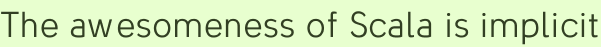

The awesomeness of Scala is implicit
Learning a new programming language, especially one that is a significant advancement over those that you’re comfortable in, is like hiking a trail that only optionally climbs mountains. There are few obligatory streams to cross at the beginning: assembling tools to write and compile the code, learning how to write familiar old constructs in the new language. And then?
If you’re learning on the side, that’s probably the point where you stroll through the lowlands for a while. In Scala’s case, expressing the very same ideas as in Java can be rewarding for its concise syntax alone. And maybe you learned map() already in Ruby; that’s an easy one to show off / put to work. Monads? There’s always tomorrow to climb that funny looking boulder.
Coderspiel is passing the six-month mark of Scala escapism. And we’re still not even sure how much of the language we don’t know. Probably most of it. In some ways Scala is almost too clever for its own good—if a language feature is so clean and graceful that no one hears it being used, does it make a sound?
Just don’t be cumbersome
Consider implicit type conversions. Here is how they’re described in Scala Reference:
Implicit conversions can be applied to expressions whose type does not match their expected type, as well as to unapplied methods.
They “can be applied”—who’s doing what exactly? Further research reveals that the programmer defines a conversion function and adds the implicit keyword. The compiler helpfully applies conversions that are in scope when they resolve mismatched types in the code. Why in the wide world of programming would you want such a thing? Because it is totally awesome.
JDBC, for example, is not awesome. It was good enough in its day, but other database libraries have evolved such that queries can be written and results can be read with a lot less mother-may-I coding. implicit conversions can make JDBC awesome. (Hold on to that link; it’s the closest thing to an implict user’s guide there is.)
val insertPerson = conn prepareStatement "insert into person(type, name) values(?, ?)";
for (val name <- names)
insertPerson<<rnd.nextInt(10)<<name<<!;Nice, right? What looks like a different library is really the same old JDBC with PreparedStatement enriched by composition. Because the enriching conversion is implicit, objects returned from the library can be used in their enriched form without preamble. And because the original isn’t permanently converted it can still be used normally, giving the appearance that it has been dynamically extended.
This is very handy for extending libraries. Wrapping one library class the old-fashioned way triggers an unfortunate cascade of wrapping everything that deals with the class; you end up writing a lot more wrapping code than code that actively improves anything. But with implicit conversion you can extend libraries ad hoc: one wrapping function works universally, and you need only touch the classes of a library you want to enhance. With no need to toil away on a sprawling, empty infrastructure, you can wrap a library for the benefit of a single application and still come out ahead.
Let’s wrap component construction whiners in duct tape
One thing people like to complain about in Wicket is that you have to construct a component hierarchy with … object constructors. They think they would rather do that work in an additional source file, probably in the cuddly and popular declarative syntax of XML. Instead of calling for these people to be banned from using all communications equipment, we’ve decided to try adding some zany tokens to component hierarchy building in the hopes of scaring them back into the woods.
The basic tool in Wicket construction is MarkupContainer’s add(child) method. Because this and many other component methods return the component itself, it’s possible to chain calls together and entirely avoid assigning most components to a val. Why? Less clutter or something. Anyway, once you start you don’t want to stop. But there are a few methods that don’t return the component, such as DataView’s setItemsPerPage(). Fortunately Scala has more tricks than Java, like always:
add(new DataView("tings", provider) {
setItemsPerPage(20)
def populateItem(item: Item) { ... }
})You can take this all the way to the bank (if your bank hasn’t invested in bad debt or whatever all that noise is about) and never have to assign values to components, except ones that actually work in tandem. So, we thought, wouldn’t it be nice to have a RichContainer with a chunky ASCII-art add method that would look cool as an infix operator? Okay!
implicit def container2rich(cont: MarkupContainer) = new RichContainer(cont)
class RichContainer(val cont: MarkupContainer) {
def << (child: Component) = cont.add(child)
}This is a trivial way to dress up component building; the substance of it is exactly the same as before. Note that to use infix notation against this you actually have to say so, as in this << new Label(...) for add(new Label(...)). Coderspiel labs tested this method against a complicated Typeturner page and found that it was cool looking, but a coherent indentation strategy was hard to nail down and some odd parentheses crashed the party.
this <<
new Label("A") <<
(new WebMarkupContainer("B") <<
new Label("C")) <<
new Label("D")Only a whiz at add() chaining would be able to make sense of that tree. Returning the first argument of the infix operation is so counterintuitive that it’s easy to get lost from one line to the next. So forget the add() semantics, let’s make all new operators!
class RichContainer(val cont: MarkupContainer) extends RichComponent(cont) {
def <<[T <: Component] (child: T) = { cont.add(child); child }
}
class RichComponent(val comp: Component) {
def <+[T <: Component] (sib: T) = { comp.getParent.add(sib); sib }
def <| (behv: IBehavior) = comp.add(behv)
def >>[T <: Component] (child: T) = { comp.getParent.getParent.add(child); child }
}Here we’ve added generics to say that the return type should be the parameter’s Component subclass, instead of just Component. (Why is that necessary? Hm.) The << operator adds a child as before but this time it returns the child. <+ adds and returns a sibling. The convention facilitates understanding operations in a series without having to work very far backwards. The first parameter is the object preceding the infix operator—but only because that is what the previous operation returned.
And there are exceptions. The <| operator adds a behavior and returns the component—otherwise, you be at a dead-end. And >> is for getting out of component dead-ends; it adds to the grandparent component. So when those are in play you do have to work backwards, but with behaviors you don’t have to look far and with >> it’s easy to find the mirrored << that it’s effectively closing.
What? Okay here’s an example, inside a populateItem method:
item <<
new PostLink("link", post) <<
new Headline("title") <+
new Label("headlineText", post.title _) >>
new Label("author_alias") <+
new RelativeDateLabel("posted")See, under item the link contains a headline and a label, and then back under the item are two other labels. We indent when adding a child and unindent when stepping back up a generation. With <| you’d indent as well, for as many lines as there are behaviors.
This is probably not the ideal hierarchy-building DSL (oops there’s the buzzword) for Wicket but it’s a start. It’s sitting in a source file in Typeturner, for now; the class package hints where it might go eventually. The Typeturner home page class uses these operators, with moderate enthusiasm, to build itself. Success!
But wait. Just like in She-Ra: Princess of Power, this episode had an easter egg, something for the most attentive readers. Did you see it? It was the underscore in the code sample above.
First-class functions are the power of Grayskull
The Wicket IModel interface is a bugaboo that strikes fear in the heart of new users. Databinder wrote an explanation to try to help them out. Models can be used for a number of different things; a model created as an anonymous subclass can produce programmatic output based on the current application state. Instead of setting a model to some serializable value new Model(new Date()) that will not change on subsequent requests, you can make one that will always contain the current time:
new AbstractReadOnlyModel {
def getObject = new Date()
}Which is not too bad (better than it looks in Java). But, we can implement this technique even better in Scala, as the Lift framework shows, by passing in a function instead of a class and a method. So let’s create a new model class:
The generic type here is a placeholder, ready for the day that Wicket cuts Java 1.4 loose.
class Readable[T](f: () => T) extends AbstractReadOnlyModel() {
def getObject = f().asInstanceOf[Object]
}We can instantiate that for the ever-current date in a label with:
new Label("now", new Readable(() => Date()))Nice. But! Do you think we are done yet? No sir we are not!
implicit def func2read_model[T](f: () => T) = new Readable(f)Look at our date label now, everybody:
new Label("cur_dt", () => new Date())That is awesome. And the mysterious underscore used earlier? Still pretty friggin’ mysterious. Lift trots it out a lot, or else we never would have known it existed. It seems that if you follow a method with a space and an underscore the compiler will know you’re referring to the function itself instead a value returned from it. But the underscore trick doesn’t work for constructors, so to get the date we went with the regular anonymous function syntax.
Likewise you can use a first-class function to take over for setObject, and apply a tuple of the two functions implicitly for an instant read-write model. (Promise.) Along those lines Scala has an abbreviated syntax for functions with one parameter, also involving an underscore, but that mystery will be left for the reader solve.
Now, about those “monads,” we were thinking that a component’s model could or should be one, and … Zzzzzzzz
Codercomments
Good post! Do you know if a Scala book is going to be available soon? I love learning new languages, but generally take a cover-to-cover approach. And I hate reading on a computer screen. ;-)
Cheers!
Yes, actually, it was just announced yesterday: Programming in Scala. The print edition is still six months away, but you can download the finished chapters as PDFs (and print them, I guess).
Great stuff like always Nathan!
Btw, you use AbstractBehavior but wouldn’t you rather use IModel instead?
What is this, code review? Fine—I’ll change it to
IBehaviorbecause I’m sure that’s what you meant to type. ;)Simplifying JDBC was one of the earliest examples I wrote showing what could be done with implicits. The language has evolved quite a bit since then, and I suspect that the same functionality would look a little different today. It would probably be a little shorter, and a little easier to read.
Hi Ross! I found it very helpful, mostly for exploring the possible. I’m not aware of any similarly extensive examples that also come with explanatory text, though use of implicit enrichment within the standard library seems to be pretty common. I suppose people could grep around there if they want to see the latest and cleverest stuff.
Add a comment